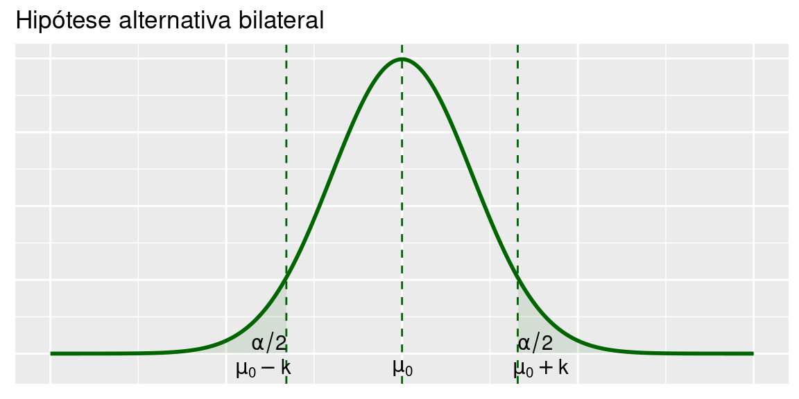

Capítulo 6 Teste de Hipóteses
Vimos que é possível, através de estatísticas amostrais adequadas, estimar parâmetros de uma população, dentro de um certo intervalo de confiança. Nos testes de hipóteses, ao invés de se construir um intervalo de confiança no qual se espera que o parâmetro da população esteja contido, testa-se a validade de uma afirmação sobre um parâmetro da população. Então, num teste de hipóteses, procura-se tomar decisões a respeito de uma população, com base em informações obtidas de amostras desta mesma população.
6.1 Ideia Geral
O contexto em que se baseia a teoria de teste de hipóteses é basicamente o mesmo da teoria de estimação por intervalo de confiança. Temos uma população representada por uma variável aleatória \(X\) cuja distribuição de probabilidade depende de algum parâmetro \(\theta\). O interesse agora está em testar a veracidade de alguma afirmativa sobre \(\theta\).
6.1.1 Hipótese nula
A hipótese nula, representada por \(H_0\), é a hipótese básica que queremos testar. Em geral, definimos a hipótese nula de modo que o nosso objetivo seja rejeitar \(H_0\). Nesse curso consideraremos apenas hipóteses nulas simples, isto é, hipóteses que estabelecem que o parâmetro de interesse é igual a um determinado valor. A forma geral é
\[H_0: \theta=\theta_0\]
Alguns exemplos são:
\[H_0: \mu=6 ~~~~~~ H_0: p=0.5 ~~~~~~ H_0: \sigma^2=25\]
O procedimento de teste de hipóteses resultará em uma regra de decisão que nos permitirá rejeitar ou não rejeitar \(H_0\).
6.1.2 Hipótese alternativa
A hipótese alternativa, representada por \(H_1\), é a hipótese que devemos considerar no caso de rejeição da hipótese nula. A forma mais geral de \(H_1\) é a hipótese bilateral
\[H_1:\theta\ne\theta_0.\]
Porém, em algumas situações, podemos ter informação que nos permita restringir o domínio da hiótese alternativa. Temos, então, hipóteses unilaterais à esquerda
\[H_1:\theta<\theta_0\]
e hipóteses unilaterais à direita
\[H_1:\theta>\theta_0.\]
A escolha entre essas formas de hipótese alternativa se faz com base no conhecimento sobre o problema sendo considerado.
6.1.3 Estatística de teste
Assim como na construção dos intervalos de confiança, iremos usar uma estatística amostral apropriada para construir o nosso teste de hipóteses e nesse contexto, essa estatística é chamada estatística de teste. As estatísticas de teste usuais são a média amostral \(\bar X\) e a proporção amostral \(\hat P\), que serão usadas na construção de testes sobre a média e a proporção populacionais, respectivamente.
6.1.4 Tipos de erro
O procedimento de decisão é definido em termos da hipótese nula \(H_0\) e as decisões possíveis são (i) rejeitar ou (ii) não rejeitar \(H_0\). Existem duas possibilidades de erro:
- Erro tipo I: rejeitar \(H_0\) quando \(H_0\) é verdadeira
- Erro tipo II: não rejeitar \(H_0\) quando \(H_0\) é falsa
6.1.5 Regra de decisão
A decisão sobre a hipótese nula é tomada com base em uma regra que estabelece um conjunto de valores, chamado região crítica (RC) ou região de rejeição, de modo que se, o valor observado da estatística amostral cair nesse região, rejeitaremos \(H_0\); caso contrário, não rejeitaremos \(H_0\).
6.1.6 Região crítica
Em geral, a definição da região crítica é feita da seguinte forma: RC é o conjunto de valores cuja probabilidade de ocorrência é pequena sob a hipótese de veracidade de \(H_0\).
A definição de “probabilidade pequena” se faz através da escolha do nível de significância \(\alpha\) do teste, que é a probabilidade do erro tipo I, isto é,
\[\alpha=P(\text{erro tipo I})=P(\text{rejeitar } H_0 | H_0 \text{ verdadeira})\]
Em geral, o valor de \(\alpha\) é pequeno e as escolhas mais comuns são \(\alpha=0.05\) e \(\alpha=0.01\).
Definido o nível de significância \(\alpha\), podemos estabelecer a região crítica usando a distribuição amostral da estatística de teste.
6.1.7 CCO e Poder do Teste
No procedimento de teste de hipóteses, as decisões possíveis são rejeitar ou não rejeitar \(H_0\). Definem-se, assim, as seguintes funções em termos das probabilidades de cada uma delas. A Curva Característica da Operação (CCO) é definida como
\[\beta(\theta)=P(\text{não rejeitar } H_0|\theta)\]
Define-se a função Poder de Teste como
\[Q(\theta)=1-\beta(\theta)=P(\text{rejeitar } H_0|\theta)\]
Estas funções (probabilidades) estão condicionadas ao verdadeiro e desconhecido valor do parâmetro \(\theta\). Se este valor estiver no conjunto de valores definidos pela hipótese alternativa, então \(Q(\theta)\) corresponde a uma probabilidade de acerto: ela mede a probabilidade de se rejeitar \(H_0\) quando \(H_0\) é falsa. Por outro lado, se a hipótese nula é \(H_0: \theta=\theta_0\), então
- \(Q(\theta_0)=1-\beta(\theta_0)\)
- \(Q(\theta_0)=1-P(\text{não rejeitar } H_0|\theta)\)
- \(Q(\theta_0)=1-P(\text{não rejeitar } H_0|H_0 \text{ verdadeira})\)
- \(Q(\theta_0)=P(\text{rejeitar } H_0|H_0 \text{ verdadeira})\)
- \(Q(\theta_0)=\alpha\)
6.1.8 Exemplo
Consideremos uma população representada por uma variável aleatória normal com média \(\mu\) e variância 400. Deseja-se testar:
\[H_0:\mu=100~~~\text{vs}~~~H_1: \mu \ne 100\]
com base em uma amostra aleatória simples de tamanho \(n=16\). Para tal, define-se a seguinte região crítica:
\[RC: \bar X < 85\text{ ou }\bar X > 115\]
- Calcule a probabilidade do erro tipo I
- Calcule a função poder do teste para os seguintes valores de \(\mu: 75, 80, 85, 90, 95, 100, 105, 110, 115, 120, 125\)
Solução
Como queremos fazer um teste sobre a média da população, é natural usarmos \(\bar X\) como estatística de teste. Como a população é normal com média \(\mu\) e variância 400, sabemos que \(\bar X\sim N(\mu,\frac{400}{16}=25)\)
- Sob a hipótese nula, \(\mu=100\). Então,
- \(\alpha = P(\text{rejeitar } H_0 | H_0 \text{ verdadeira}\rightarrow \mu=100)\)
- \(\alpha = P\Big(\{\bar X<85\} \cup \{\bar X>115\}|\bar X\sim N(100,25)\Big)\)
- \(\alpha = P\Big(\bar X<85 |\bar X\sim N(\mu,25)\Big) + P\Big(\bar X>115 |\bar X\sim N(\mu,25)\Big)\)
- \(\alpha = P\Big(Z<\frac{85-100}{5}\Big) + P\Big(Z>\frac{115-100}{5}\Big)\)
- \(\alpha = P\Big(Z<-3\Big) + P\Big(Z>3\Big)\)
- \(\alpha = 2\times P\Big(Z>3\Big)\)
- \(\alpha = 0.0027\)
- A função poder do teste é dada por:
- \(Q(\mu) = 1-\beta(\mu)\)
- \(Q(\mu)=1-P(\text{não rejeitar } H_0|\mu)\)
- \(Q(\mu)=1-P(85<\bar X<115|\mu)\)
- \(Q(\mu)=1-P(85<\bar X<115|\bar X\sim N(\mu,25))\)
- \(Q(\mu)=1-P(\frac{85-\mu}{5}< Z<\frac{115-\mu}{5}|\bar X\sim N(\mu,25))\)
| Mu | Q(mu) |
|---|---|
| 75 | 0.97725 |
| 80 | 0.84134 |
| 85 | 0.50000 |
| 90 | 0.15866 |
| 95 | 0.02278 |
| 100 | 0.00270 |
| 105 | 0.02278 |
| 110 | 0.15866 |
| 115 | 0.50000 |
| 120 | 0.84134 |
| 125 | 0.97725 |
Observe que, para \(\mu=100\), valor da hipótese nula, a função poder é igual à probabilidade do erro tipo I (nível de significância).
É interessante notar também que quanto mais distante do valor \(\mu_0=100\), maior o poder do teste, ou seja, há uma probabilidade mais alta de se rejeitar \(H_0\) quando o valor alternativo \(\mu\) está bem distante de \(\mu_0\).
Agora, considere a situação do exemplo anterior, com as seguintes diferenças: o tamanho da amostra é \(n=100\) e a região crítica passa a ser
\[RC: \bar X < 94\text{ ou }\bar X > 106\]
Note que é razoável “estreitar” a região crítica, já que a amostra é maior. Nesse caso, \(\alpha\) é exatamente igual ao do exemplo anterior, já a função poder do teste para os mesmos valores (em vermelho \(n=100\)):
Note que o poder do teste baseado em uma amostra de tamanho 100 é sempre maior que o poder do teste baseado em uma amostra de tamanho 16.
6.2 T.H. para a média de uma Normal com variância conhecida
Neste capítulo iremos aplicar os conceitos básicos sobre a teoria de teste de hipóteses a uma situação específica. Nosso interesse estará concentrado na média de uma população normal. Assim como no caso dos intervalos de confiança, iremos iniciar nossos estudos supondo que a variância dessa população seja conhecida. Como já dito, essa situação não é muito comum na prática, mas, em termos didáticos, a apresentação dos conceitos fica simplificada. Entendendo bem a construção de um teste de hipóteses para esse caso particular, a apresentação para as outras situações é bastante semelhante, mudando apenas a distribuição amostral.
Contextualizando com um exemplo
Depois de uma pane geral no sistema de informação de uma empresa, o gerente administrativo deseja saber se houve alteração no tempo de processamento de determinada atividade. Antes da pane, o tempo de processamento podia ser aproximado por uma variável aleatória normal com média de 100 minutos e desvio padrão de 10 minutos. O gerente acredita que a pane não tenha alterado a variabilidade do processo. Uma amostra de 16 tempos de processamento após a pane revela uma média de 105,5 minutos. Ao nível de significância de 5%, qual é a conclusão sobre a alteração do tempo médio de processamento?
Solução
O interesse do gerente é comparar os tempos antes e depois da pane. Antes da pane, o tempo médio de processamento era de 100 minutos. Como ele não sabe o tipo de alteração que possa ter ocorrido, ele precisa saber se o tempo médio depois da pane é diferente do tempo anterior. Isso nos leva às seguintes hipóteses nula e alternativa:
\[H_0:\mu=100\text{ vs } H_1:\mu\neq 100\]
Seja \(X\) a variável aleatória que representa o tempo de processamento. Então, pelos dados do problema, temos que \(X\sim N(\mu; 100)\). Antes da pane, \(\mu =100\). Como a população é normal, sabemos que a distribuição da média amostral também é normal e como não deve ter havido alteração na variabilidade do processo, resulta que o desvio padrão é de 10 minutos em qualquer situação. Logo,
\[\bar X \sim N\left(\mu,\frac{100}{16}\right)\]
ou equivalentemente,
\[Z=\frac{\bar X-\mu}{2,5}\sim N(0,1)\]
Pelo enunciado do problema, o nível de significância é de 5%. Isso significa que a probabilidade do erro tipo I é 0,05. Como visto, o erro tipo I consiste em rejeitar a hipótese nula quando ela é verdadeira. Logo,
\[\alpha=P(\text{rejeitar }H_0|H_0\text{ verdadeira})=0,05\]
Quando \(H_0\) verdadeira, a estatística de teste tem a seguinte distribuição:
\[H_0\text{ verdadeira} \Rightarrow \bar X \sim N\left(100,\frac{100}{16}\right)\]
ou equivalentemente,
\[Z=\frac{\bar X-100}{\sqrt{\frac{100}{16}}}\sim N(0,1)\]
A nossa região crítica consiste nos valores de \(X\) com probabilidade pequena de ocorrerem sob essa hipótese. Ou seja, a região crítica consiste nos valores de \(X\) muito afastados da média suposta de \(\mu=100\). Como a hipótese alternativa é bilateral, “muito afastado” significa “muito maior” ou “muito menor” do que \(\mu=100\).
Então, nossa região crítica é
\[\bar X < 100-k \text{ ou } \bar X > 100+k\]
e isso é equivalente a
\[\bar X -100 < -k \text{ ou } \bar X -100 > +k\]
Usando a função módulo, podemos escrever:
\[RC: |\bar X -100|>k\]
e o valor da constante \(k\) é determinado pelo nível de significância:
\(P\left[|\bar X -100|>k\Big|\bar X \sim N\left(100;6,25\right)\right] = 0,05\)
\(P\left(\bar X < 100-k|\bar X \sim N(100,6,25)\right)+P\left(\bar X > 100+k|\bar X \sim N(100,6,25)\right) = 0,05\)
\(P\left(Z<\frac{-k}{2,5}\right)+P\left(Z>\frac{k}{2,5}\right) = 0,05\)
\(P\left(Z>\frac{k}{2,5}\right)+P\left(Z>\frac{k}{2,5}\right) = 0,05\)
\(P\left(Z>\frac{k}{2,5}\right) = 0,025\)
Como, \(z_{0,025}=1.96\), então \(\frac{k}{2,5}=1,96\), assim \(k=4,9\).
A região crítica é
\[RC: \bar X<95,1\text{ ou }\bar X>104,9\]
Como o valor da estatística de teste para a amostra observada está na região crítica, devemos rejeitar a hipótese nula, ou seja, as evidências amostrais indicam uma alteração do tempo de processamento da tarefa após a pane.
A função poder do teste é definida como
\[\beta(\mu)=P(\text{rejeitar } H_0|\mu)\]
Em termos da nossa região crítica podemos escrever
\[ \begin{aligned} \beta(\mu)&= P\left[\bar X<95,1 |\bar X \sim N(100,6,25)\right] + P\left[\bar X>104,9 |\bar X \sim N(100,6,25)\right] \\ &=P\left[Z<\frac{95,1-\mu}{2,5}\right]+P\left[Z>\frac{104,9-\mu}{2,5}\right] \end{aligned} \]
Calculando \(\beta(\mu)\) para diferentes valores de \(\mu\) obtemos o gráfico exibido na Figura abaixo:
6.2.1 Construindo o teste de hipóteses
De posse de uma amostra aleatória simples \(X_1, X_2, \ldots, X_n\) extraída de uma população \(X\sim N(\mu; \sigma^2)\), nosso interesse está em testar a hipótese nula
\[H_0: \mu = \mu_0\]
a um nível de significância \(\alpha\).
Dependendo do conhecimento sobre o problema, a hipótese alternativa pode tomar uma das três formas:
\[H_1:\mu\neq\mu_0~~~~~~H_1:\mu>\mu_0~~~~~~H_1:\mu<\mu_0\]
Em qualquer dos casos, a estatística de teste é a média amostral; se a variância \(\sigma^2\) é conhecida, sabemos que
\[\bar X \sim N\left(\mu,\frac{\sigma^2}{n}\right)\]
A regra de decisão consiste em rejeitar a hipótese nula se o valor de \(\bar X\) estiver “longe” do valor \(\mu_0\). No caso da hipótese alternativa bilateral, estar longe significa ser muito maior ou muito menor que \(\mu_0\); para a alternativa unilateral à direita, estar longe significa ser muito maior do que \(\mu_0\) e para a alternativa unilateral à esquerda, longe significa ser muito menor que \(\mu_0\). As expressões “muito menor” e “muito maior” ficam perfeitamente definidas a partir do valor do nível de significância \(\alpha\).
Veja as Figuras abaixo, em que ilustra-se a região crítica para as três hipóteses alternativas. Como antes, vamos denotar por \(z_\alpha\) a abscissa da curva normal padrão que deixa área (probabilidade) \(\alpha\) acima dela.

6.2.1.1 Bilateral
Consideremos as hipóteses
\[H_0:\mu=\mu_0 \text{ vs } H_1:\mu\ne\mu_0\]
A região crítica é
\[\bar X < \mu_0-k\text{ ou }\bar X > \mu_0+k\]
e se a hipótese nula é verdadeira,
\[\bar X \sim N\left(\mu_0,\frac{\sigma^2}{n}\right)\]
Com nível de significância \(\alpha=P(\text{erro tipo I})\), temos que ter:
\(\alpha=P\left(\text{rejeitar }H_0|H_0\text{ verdadeira}\right)\)
\(\alpha=P\left(\bar X < \mu_0-k\text{ ou }\bar X > \mu_0+k|\bar X \sim N\left(\mu_0,\frac{\sigma^2}{n}\right)\right)\)
\(\alpha=P\left(\bar X < \mu_0-k|\bar X \sim N\left(\mu_0,\frac{\sigma^2}{n}\right)\right) + P\left(\bar X > \mu_0+k|\bar X \sim N\left(\mu_0,\frac{\sigma^2}{n}\right)\right)\)
\(\alpha=P\left(Z<\frac{-k}{\frac{\sigma}{\sqrt n}}\right)+P\left(Z>\frac{k}{\frac{\sigma}{\sqrt n}}\right)\)
\(\alpha=2\times P\left(Z>\frac{k}{\frac{\sigma}{\sqrt n}}\right)\)
\(\frac{\alpha}{2}=P\left(Z>\frac{k}{\frac{\sigma}{\sqrt n}}\right)\)
\(\frac{k}{\frac{\sigma}{\sqrt n}}=z_{\frac{\alpha}{2}}\)
\(k = z_{\frac{\alpha}{2}}\frac{\sigma}{\sqrt n}\)
Logo, a região crítica é:
\[\bar X < \mu_0-z_{\frac{\alpha}{2}}\frac{\sigma}{\sqrt n}\text{ ou }\bar X > \mu_0+z_{\frac{\alpha}{2}}\frac{\sigma}{\sqrt n}\]
6.2.1.2 Unilateral à direita
Consideremos as hipóteses
\[H_0:\mu=\mu_0 \text{ vs } H_1:\mu>\mu_0\]
A região crítica é
\[\bar X > \mu_0+k\]
e se a hipótese nula é verdadeira,
\[\bar X \sim N\left(\mu_0,\frac{\sigma^2}{n}\right)\]
Com nível de significância \(\alpha=P(\text{erro tipo I})\), temos que ter:
\(\alpha=P\left(\text{rejeitar }H_0|H_0\text{ verdadeira}\right)\)
\(\alpha=P\left(\bar X > \mu_0+k|\bar X \sim N\left(\mu_0,\frac{\sigma^2}{n}\right)\right)\)
\(\alpha=P\left(Z>\frac{k}{\frac{\sigma}{\sqrt n}}\right)\)
\(\frac{k}{\frac{\sigma}{\sqrt n}}=z_{\alpha}\)
\(k = z_{\alpha}\frac{\sigma}{\sqrt n}\)
Logo, a região crítica é:
\[\bar X > \mu_0+z_{\alpha}\frac{\sigma}{\sqrt n}\]
6.2.1.3 Unilateral à esquerda
Consideremos as hipóteses
\[H_0:\mu=\mu_0 \text{ vs } H_1:\mu<\mu_0\]
A região crítica é
\[\bar X < \mu_0-k\]
e se a hipótese nula é verdadeira,
\[\bar X \sim N\left(\mu_0,\frac{\sigma^2}{n}\right)\]
Com nível de significância \(\alpha=P(\text{erro tipo I})\), temos que ter:
\(\alpha=P\left(\text{rejeitar }H_0|H_0\text{ verdadeira}\right)\)
\(\alpha=P\left(\bar X < \mu_0-k|\bar X \sim N\left(\mu_0,\frac{\sigma^2}{n}\right)\right)\)
\(\alpha=P\left(Z<-\frac{k}{\frac{\sigma}{\sqrt n}}\right)\)
\(\alpha=P\left(Z>\frac{k}{\frac{\sigma}{\sqrt n}}\right)\)
\(\frac{k}{\frac{\sigma}{\sqrt n}}=z_{\alpha}\)
\(k = z_{\alpha}\frac{\sigma}{\sqrt n}\)
Logo, a região crítica é:
\[\bar X < \mu_0-z_{\alpha}\frac{\sigma}{\sqrt n}\]
6.2.2 Teste de Hipóteses vs Intervalo de Confiança
É interessante notar a expressão que aparece na região crítica para o teste bilateral; ela é a mesma obtida para a margem de erro do intervalo de confiança para a média de uma população normal com variância conhecida:
\[\varepsilon=z_{\frac{\alpha}{2}}\frac{\sigma}{\sqrt n}\]
Podemos ver, assim, que existe uma relação entre os dois procedimentos; na verdade, em um teste de hipóteses bilateral, rejeitamos a hipótese nula \(H_0\) se o valor observado da estatística de teste não estiver no intervalo de confiança.
6.2.3 Valor P (ou p-valor)
Nos exemplos acima, a determinação da região crítica foi feita com base no nível de significância, isto é, fixado o nível de significância encontramos o valor \(k\) que definia os limites entre valores prováveis (aqueles que levam à não rejeição de \(H_0\)) e pouco prováveis (aqueles que levam à rejeição de \(H_0\)). Um outro procedimento bastante usual, especialmente quando são utilizados programas computacionais, consiste em calcular a probabilidade de se obter um valor tão ou mais desfavorável que o valor observado, se \(H_0\) for verdadeira. Essa probabilidade é chamada valor P ou p-valor.
Portanto, definimos p-valor como: a probabilidade de obtermos um valor tão ou mais extremo que o valor observado dado que \(H_0\) é verdadeira. Devemos rejeitar a hipótese nula \(H_0\) ao nível de significância \(\alpha\) sempre que o p-valor for menor ou igual a \(\alpha\),ou seja:
\[\text{Rejeitamos } H_0\Leftrightarrow \text{p-valor} \leq \alpha\]
6.2.4 Exemplo
Solução
No exemplo exposto no início da seção, o valor obtido com os dados amostrais para a estatística de teste foi \(\bar x = 105,5\). Como o teste é bilateral, valores “longe” de 100 são aqueles muito menores ou muito maiores que 100. O procedimento visto consistiu em dividir a probabilidade do erro tipo I igualmente nas duas caudas da distribuição normal e dessa forma identificamos a região crítica. Vamos, agora, calcular o valor P para o nosso exemplo; ele é a probabilidade de obtermos um valor tão ou mais extremo que o valor observado. Como o valor observado está à direita da média, devemos calcular a seguinte probabilidade:
\[ \begin{aligned} P &= P\left(\bar X \geq 105,5|H_0\text{ verdadeira}\right)\\ &= P\left[\bar X \geq 105,5|\bar X \sim N\left(100;\frac{100}{16}\right)\right]\\ &=P\left(Z\geq \frac{105,5-100}{2,5}\right)\\ &=P(Z\geq 2,2)\\ &=0,0139 \end{aligned} \]
Vamos analisar a Figura abaixo, onde está ilustrado esse valor. O valor amostral observado para \(\bar X\) é \(\bar x = 105,5 = 100+5,5\). Como o teste é bilateral, se tivéssemos obtido o valor \(\bar x = 100 - 5,5\), esse valor também seria considerado tão afastado de \(100\) quanto \(105,5\). Assim, para testes bilaterais, temos que considerar a probabilidade nas duas caudas da distribuição. O que esse resultado está nos dizendo é o seguinte: se \(H_0\) for verdadeira, a probabilidade de obtermos um valor distante de \(100\) por \(5,5\) unidades em qualquer direção é \(2\times 0,0139 = 0,0278\). Essa probabilidade é chamada valor P.
No exemplo, vemos que o valor P é pequeno, o que significa que é pouco provável obtermos um valor tão extremo quando \(H_0\) é verdadeira. Logo, é razoável supormos que a hipótese nula não seja verdadeira, a mesma conclusão obtida ao trabalharmos com o nível de significância de 5%. Na verdade, rejeitaríamos a hipótese nula para qualquer nível de significância maior que \(0,0278\).
6.3 T.H. para a média de uma Normal com variância desconhecida
Neste capítulo você completará seu estudo básico de testes de hipóteses sobre a média de uma população, analisando a situação relativa a uma população normal quando não se conhece a variância desta população. Assim como no caso do intervalo de confiança, para testar hipóteses relativas à média de tal população, é necessário estimar essa variância e isso introduz mais uma fonte de variabilidade no procedimento: com uma única amostra, queremos testar hipóteses sobre a média, mas precisamos também estimar a variância da população. O procedimento é simples e análogo aos casos estudados nos caítulos anteriores; o que muda é a distribuição amostral da estatística de teste. Em vez de usarmos a distribuição normal para determinar os valores críticos, usaremos novamente a distribuição t de Student.
Considere uma população descrita por uma variável aleatória normal com média \(\mu\) e variância \(\sigma^2\): \(X\sim N(\mu,\sigma^2)\). Nosso interesse é testar hipóteses sobre a média \(\mu\) a partir de uma amostra aleatória simples \(X_1, X_2, \ldots, X_n\). Como visto anteriormente, se a variância \(\sigma^2\) não é conhecida, então temos que usar a estatística
\[T=\sqrt{n}\frac{\bar X-\mu}{S}\]
cuja distribuição \(t\) de Student com \(n-1\) graus de liberdade.
6.3.1 Construindo o teste de hipóteses
De posse desta estatística de teste, o procedimento de construção do teste é idêntico ao visto anteriormente: identificadas a hipótese nula (sempre na forma de uma hipótese simples \(\mu=\mu_0\)) e a hipótese alternativa, a região crítica é formada pelos valores da estatística de teste pouco prováveis sob \(H_0\). O nível de significância e o tipo de hipótese alternativa permitem a identificação precisa do que são “valores pouco prováveis”: são valores na(s) cauda(s) da distribuição de \(T\) quando a hipótese nula é verdadeira.
Seja \(X_1,X_2,\ldots,X_n\) uma amostra amostra aleatória simples de uma população \(X\) cuja disribuição é \(N(\mu; \sigma^2)\). Nosso interesse é testar alguma hipótese sobre a média \(\mu\) desta população. Em geral, a variância \(\sigma^2\) não é conhecida e, portanto, vamos estimá-la por
\[S^2=\frac{1}{n-1}\sum_{i=1}^n \left(X_i-\bar X\right)^2\]
Lembre-se que \(S^2\) é um estimador não-viesado de \(\sigma^2\).
A hipótese nula que iremos considerar será
\[H_0:\mu=\mu_0\]
As possíveis formas da hipótese alternativa são:
- Bilateral: \(H_1:\mu\ne\mu_0\)
- Unilateral à direita: \(H_1:\mu > \mu_0\)
- Unilateral à esuqerda: \(H_1:\mu < \mu_0\)
Como antes, a escolha entre essas três possibilidades se faz com base no conhecimento do problema. Se não temos informação alguma sobre a alternativa, temos que usar um teste bilateral.
Como o teste é sobre a média de uma população normal, a estatística amostral que deve ser utilizada é \(\bar X\). Como a variância populacional não é conhecida, sabemos que
\[T=\frac{\bar X-\mu}{\frac{S}{\sqrt n}} \sim t(n-1)\]
e é a nossa estatística de teste.
A regra de decisão consiste em definir a região crítica RC como o conjunto de valores cuja probabilidade de ocorrência é pequena sob a hipótese de veracidade de \(H_0\). Logo, nossa regra de decisão se baseia na estatística de teste
\[T_0=\frac{\bar X-\mu_0}{\frac{S}{\sqrt n}} \sim t(n-1)\]
Como a estatística de teste segue uma distribuição t de Student, valores com pequena probabilidade de ocorrência estão nas caudas da distribuição. Isso equivale a valores de \(\bar X\) “distandes” de \(\mu_0\). Assim, a região crítica para cada tipo de hipótese alternativa é definida como segue:
- Bilateral: \(T_0 < -k\) ou \(T_0 > k\)
- Unilateral à direita: \(T_0 > k\)
- Unilateral à esuqerda: \(T_0 < -k\)
Nas Figuras abaixo ilustram-se as regiões críticas para cada tipo de hipótese alternativa.


O procedimento usual de teste de hipóteses consiste em se fixar o nível de significância \(\alpha\), que, por definição, é a probabilidade de se cometer o erro tipo I:
\[\alpha = P(\text{erro tipo I}) = P(\text{rejeitar }H_0|H_0\text{ é verdadeira})\]
Assim, para cada tipo de hipótese alternativa a região crítica é identificada impondo-se a condição \(P(T \in RC|H0\text{ é verdadeira}) = \alpha\)
6.3.1.1 Bilateral
A região crítica é calculada como:
\[ \begin{aligned} \alpha&=P\left[T_0<-k\right|T_0\sim t(n-1)]+P\left[T_0>k\right|T_0\sim t(n-1)]\\ \alpha&=2\times P\left[T_0<-k\right|T_0\sim t(n-1)]\\ \frac{\alpha}{2}&=P\left[T_0>k\right|T_0\sim t(n-1)] \end{aligned} \]
Usando a notação \(t_{n;\alpha}\) para denotar a abcissa da distribuição \(t\) de Student com \(n\) graus de liberdade que deixa área (probabilidade) \(\alpha\) acima dela, resulta a seguinte região crítica para o teste bilateral:
\[T_0<-t_{n-1;\frac{\alpha}{2}}~~~~~~\text{ou}~~~~~~T_0>t_{n-1;\frac{\alpha}{2}}\]
Essa região crítica também pode ser escrita de outra forma usando a seguinte equivalência:
\[T_0<-t_{n-1;\frac{\alpha}{2}}\Longrightarrow \frac{\bar X-\mu_0}{\frac{S}{\sqrt n}}<-t_{n-1;\frac{\alpha}{2}}\Longrightarrow\bar X<\mu_0-t_{n-1;\frac{\alpha}{2}}\frac{S}{\sqrt n}\]
\[T_0>t_{n-1;\frac{\alpha}{2}}\Longrightarrow \frac{\bar X-\mu_0}{\frac{S}{\sqrt n}}>t_{n-1;\frac{\alpha}{2}}\Longrightarrow\bar X>\mu_0+t_{n-1;\frac{\alpha}{2}}\frac{S}{\sqrt n}\]
6.3.1.2 Unilateral à direita
A região crítica é calculada como:
\[ \begin{aligned} \alpha&=P\left[T_0>k\right|T_0\sim t(n-1)]\\ t_{n-1;\alpha}&=k \end{aligned} \]
ou seja, a região crítica é
\[T_0 > t_{n-1;\alpha}\]
ou equivalentemente
\[\bar X>\mu_0+t_{n-1;\alpha}\frac{S}{\sqrt n}\]
6.3.1.3 Unilateral à esquerda
De forma análoga, obtém-se a seguinte região crítica para o teste unilateral à esquerda:
\[T_0 <- t_{n-1;\alpha}\]
ou equivalentemente
\[\bar X<\mu_0-t_{n-1;\alpha}\frac{S}{\sqrt n}\] ### Teste de Hipóteses vs Intervalo de Confiança
xxx
6.3.2 Valor P (ou p-valor)
XXX
6.3.3 Exemplo
Depois de uma pane geral no sistema de informação de uma empresa, o gerente administrativo deseja saber se houve alteração no tempo de processamento de determinada atividade. Antes da pane, o tempo de processamento podia ser aproximado por uma variável aleatória normal com média de 100 minutos. Uma amostra de 16 tempos de processamento após a pane revela uma média \(\bar x = 105,5\) minutos e um desvio padrão \(s = 10\) minutos. Ao nível de significância de 5%, qual é a conclusão sobre a alteração do tempo médio de processamento?
Solução
Como visto, as hipóteses do problema são:
\[ \begin{cases} H_0:\mu=\mu_0 \\ H_1:\mu\ne\mu_0 \end{cases} \]
Como a variância não é conhecida, temos que usar a distribuição \(t\) de Student com \(n-1=16-1=15\) graus de liberdade. Para um teste bilateral com nível de significância de 5%, a abscissa de interesse é aquela que deixa área de \(0,025\) acima. Consultando a Tabela, resulta
\[t_{15;0,025}=2,131\]
A estatística de teste é
\[T_0=\frac{\bar X -100}{\frac{10}{\sqrt{16}}}\sim t(15)\]
e a região crítica é
\[T_0<-2,131~~~~\text{ou}~~~~T_0>2,131\]
O valor observado da estatísitca de teste é
\[T_0=\frac{105,5 -100}{\frac{10}{\sqrt{16}}}=2,2\]
Como esse valor pertence à região crítica, rejeitamos a hipótese nula e concluímos que houve alteração no tempo de processamento após a pane.
Em termos da média amostral, a região crítica é
\[\bar X<100-2,131\times\frac{10}{\sqrt{16}}~~~~\text{ou}~~~~\bar X>100+2,131\times\frac{10}{\sqrt{16}}\]
ou
\[\bar X<105,33~~~~\text{ou}~~~~\bar X>94,673\]
Comparando com a Região Crítica obtida no Exemplo 1 da seção anterior (\(\bar X < 95.1\text{ ou }\bar X > 104.9\)), note que com o mesmo nível de significância, a região crítica no caso de variância desconhecida é mais extrema, refletindo a maior variabilidade da distribuição t-student.
Para calcular o p-valor:
\[ \begin{aligned} p-valor &= 2\times P\left(\bar X>105,5 \Big| \frac{\bar X-100}{\frac{10}{\sqrt 16}} \sim t(15)\right)\\ &= 2\times P\left(t(15)>\frac{105,5-100}{\frac{10}{\sqrt 16}}\right)\\ &= 2\times P\left(t(15)>2,2\right)\\ &= 2\times 0, 02195 = 0, 0439 \end{aligned} \]
Como \(p-valor < 0,05\), rejeitamos \(H_0\) ao nível de significância de 5%.
6.4 T.H. para a proporção populacional
Já aprendemos a construir testes de hipóteses sobre a média de uma população normal com variância \(\sigma^2\) conhecida. O procedimento baseou-se na distribuição amostral da média amostral que, com as hipóteses de normalidade e conhecimento da variância populacional, sabemos ser normal com a mesma média e variância \(\frac{\sigma^2}{n}\). Agora, iremos fazer uso do Teorema Limite Central para construir testes de hipóteses sobre proporções com base em amostras grandes. Vimos que, para amostras grandes, a distribuição amostral da proporção amostral pode ser aproximada por uma distribuição normal e, assim, o procedimento de teste de hipóteses será idêntico ao estudado sobre a média de uma população normal com variância \(\sigma^2\) conhecida.
O contexto de interesse é o seguinte: temos uma população em que cada elemento é classificado de acordo com a presença ou ausência de determinada característica. Em termos de variável aleatória, essa população é representada por uma v.a. de Bernoulli, isto é:
\[ X=\begin{cases} 1,\text{ se elemento possui característica de interesse}\\ 0,\text{ se elemento não possui característica de interesse} \end{cases} \]
Então, \(P(X = 1) = p\), \(E(X) = p\) e \(V(X) = p(1-p)\). O parâmetro \(p\) é também a proporção de elementos da população que possuem a caracterísitca de interesse. Em geral, esse parâmetro é desconhecido e queremos testar hipóteses feitas sobre seu possível valor.
Suponha, então, que dessa população seja extraída uma amostra aleatória simples \(X_1,\ldots,X_n\) com reposição. Vimos que a proporção \(\hat P\) de elementos na amostra que possuem a característica de interesse, definida por
\[\hat P = \frac{S_n}{n} = \frac{X_1+X_2+\ldots+X_n}{n}\]
é um estimador não-viesado para \(p\) com variância \(\frac{p(1-p)}{n}\). Mais precisamente,
\[E(\hat P)=p\]
\[V(\hat P)=\frac{p(1-p)}{n}\]
6.4.1 Construindo o teste de hipóteses
Como a proporção amostral é uma média de uma amostra aleatória simples de uma população com distribuição de Bernoulli com parâmetro \(p\), o Teorema Central do Limite nos diz, então, que a distribuição de \(\hat P\) se aproxima de uma nornal com média \(p\) e variância \(\frac{p(1-p)}{n}\).
Resumindo, temos o seguinte resultado:
\[\hat P \approx N\left(p,\frac{p(1-p)}{n}\right)\]
ou, equivalentemente,
\[\frac{\hat P-p}{\sqrt{\frac{p(1-p)}{n}}}\approx N(0,1)\]
Vamos ver, agora, como usar esse resultado para construir testes de hipóteses sobre a verdadeira proporção populacional \(p\).
A hipótese nula que consideraremos será uma hipótese simples:
\[H_0:p=p_0\]
As hipóteses alternativas possíveis são
- Bilateral: \(H_1:p\neq p_0\)
- Unilateral à direita: \(H_1:p > p_0\)
- Unilateral à esquerda: \(H_1:p < p_0\)
Como no caso da média, a escolha das hipóteses nula e alternativa deve ser feita levando-se em conta que a hipótese nula deve ser uma hipótese simples. Assim, você deve “traduzir” a situação de interesse do problema em desigualdades envolvendo a proporção \(p\). A hipótese alternativa é a desigualdade que não inclui o sinal de \(=\). A estatística de teste é
\[Z=\frac{\hat P-p}{\sqrt{\frac{p(1-p)}{n}}}\approx N(0,1)\]
Dado um nível de significância \(\alpha\), a região crítica é definida como o conjunto de valores da estatísttca de teste que têm probabilidade pequena de ocorrerem sob a veracidade da hipótese nula. Assim, a região crítica é definida como o conjunto de valores de
\[Z_0=\frac{\hat P-p_0}{\sqrt{\frac{p_0(1-p_0)}{n}}}\approx N(0,1)\]
com pequena probabilidade de ocorrência. Como estamos exatamente no mesmo procedimento de teste de hipóteses será idêntico ao estudado sobre a média de uma população normal com variância \(\sigma^2\) conhecida,
- \(Z_0 < -Z_\frac{\alpha}{2}\) ou \(Z_0>Z_\frac{\alpha}{2}\) (teste bilateral)
- \(Z_0 > z_\alpha\) (teste unilateral à direita)
- \(Z_0 < -z_\alpha\) (teste unilateral à esquerda)
ou
- \(\hat P < p_0-Z_\frac{\alpha}{2}\sqrt{\frac{p_0(1-p_0)}{n}}\) ou \(\hat P > p_0+Z_\frac{\alpha}{2}\sqrt{\frac{p_0(1-p_0)}{n}}\) (teste bilateral)
- \(\hat P > p_0+Z_\alpha\sqrt{\frac{p_0(1-p_0)}{n}}\) (teste unilateral à direita)
- \(\hat P < p_0-Z_\alpha\sqrt{\frac{p_0(1-p_0)}{n}}\) (teste unilateral à direita)
6.4.2 Valor P (ou p-valor)
Como já visto, o valor P é a probabilidade de se obter um valor tão ou mais extremo (na direção da hipótese alternativa) que o valor observado da estatística de teste. Denotando por \(Z_0\) o valor observado da estatística de teste, temos as seguintes possibilidades:
- \(\text{p-valor}=2\times P(Z>|Z_0|)\) (teste bilateral)
- \(\text{p-valor}= P(Z>|Z_0|)\) (teste unilateral à direita ou à esquerda)
Valores pequenos de \(\text{p-valor}\) indicam que o valor observado é pouco provável de ocorrer sob a hipótese nula; logo, valores pequenos de \(\text{p-valor}\) levam à rejeição da hipótese nula. A hipótese nula é rejeitada a qualquer nível de significância \(\alpha \geq \text{p-valor}\).
6.4.3 Exemplo
Uma amostra de 64 elementos é usada para testar
\[ \begin{cases} H_0:p=0,35 \\ H_1:p\neq 0,35 \end{cases} \]
Estabeleça a região crítica para o nível de significância de 1%. Se a proporção amostral para esta amostra é \(\hat P = 0,26\), calcule o \(\text{p-valor}\).
Solução
Com \(\alpha=0,01\) e um teste bilateral, resulta que \(z_{0,005}=2,59\). A estatística de teste é
\[Z_0=\frac{0,26-0,35}{\sqrt{\frac{0,35\times 0,65}{64}}}=-1,51\]
e a região crítica é
\[Z_0<-2,59~~~~\text{ou}~~~~Z_0>2,59\]
Como o teste é bilateral, o \(\text{p-valor}\) é calculado como
\[ \begin{aligned} \text{p-valor} &= 2\times P(Z>|-1,51|) \\ &= 2\times 0,0655\\ &= 0,131 \end{aligned} \]
Como o \(\text{p-valor}\) é grande, não se rejeita a hipótese nula, ou seja, a probabilidade de se obter um valor tão extremo quanto o observado é alta, se \(H_0\) for verdadeira. A hipótese nula só seria rejeitada para níveis de significância maiores que 13,1%.
6.5 T.H. para a variância de uma Normal
Agora completaremos o estudo de teste de hipóteses sobre parâmetros de uma população, analisando o caso da variância de uma população normal. Assim como na construção de intervalos de confiança, nossa estatística de teste tem distribuição qui-quadrado e a região crítica, como antes, será formada pelos valores pouco prováveis desta estatística de teste sob a hipótese nula.
Considere uma população descrita por uma variável aleatória normal com média \(\mu\) e variância \(\sigma^2: X\sim N(\mu; \sigma^2)\). Nosso interesse é testar hipóteses sobre a a variância \(\sigma^2\) a partir de uma amostra aleatória simples \(X_1, X_2,\ldots, X_n\). Como visto anteriormente, a estatística
\[\chi^2=\frac{(n-1)S^2}{\sigma^2}\]
tem distribuição qui-quadrado com \(n-1\) graus de liberdade.
De posse desta estatística de teste, o procedimento de construção do teste é idêntico ao visto nos últimos capítulos: identificadas a hipótese nula (sempre na forma de uma hipótese simples \(\sigma^2=\sigma^2_0\)) e a hipótese alternativa, a região crítica é formada pelos valores da estatística de teste pouco prováveis sob \(H_0\). O nível de significância e o tipo de hipótese alternativa permitem a identificação precisa do que são “valores pouco prováveis”: são valores na(s) cauda(s) da distribuição de \(\chi^2\) quando a hipótese nula é verdadeira.
6.5.1 Construindo o teste de hipóteses
Seja \(X_1, X_2,\ldots, X_n\) uma amostra aleatória simples de uma população \(X\) cuja distribuição é \(N(\mu,\sigma^2)\). Nosso interesse é testar alguma hipótese sobre a variância \(\sigma^2\), que é estimada por
\[S^2=\frac{1}{n-1}\sum_{i=1}^n(X_i-\bar X)^2\]
Lembre-se que \(S^2\) é um estimador não-viesado de \(\sigma^2\).
A hipótese nula que iremos considerar será
\[H_0:\sigma^2=\sigma^2_0\]
As possíveis formas da hipótese alternativa são:
- Bilateral: \(H_1:\sigma^2\neq \sigma^2_0\)
- Unilateral à direita: \(H_1:\sigma^2 > \sigma^2_0\)
- Unilateral à esquerda: \(H_1:\sigma^2 < \sigma^2_0\)
Como o teste é sobre a variância de uma população normal, a estatística amostral a ser utilizada é
\[\frac{(n-1)S^2}{\sigma^2}\sim \chi^2_{n-1}\]
O procedimento de decisão é definido em termos da hipótese nula \(H_0\) e as decisões possíveis são (i) rejeitar ou (ii) não rejeitar \(H_0\). Conforme já visto, existem duas possibilidades de erro:
- Erro tipo I: rejeitar \(H_0\) quando \(H_0\) é verdadeira
- Erro tipo II: não rejeitar \(H_0\) quando \(H_0\) é falsa
A regra de decisão consiste em definir a região crítica RC como o conjunto de valores cuja probabilidade de ocorrência é pequena sob a hipótese de veracidade de \(H_0\). Logo, nossa regra de decisão se baseia na estatística de teste
\[X_0=\frac{(n-1)S^2}{\sigma^2_0}\sim \chi^2_{n-1}\]
Os valores com pequena probabilidade de ocorrência estão nas caudas da distribuição. Assim, a região crítica para cada tipo de hipótese alternativa é definida como segue:
- \(X_0<k_I\) ou \(X^2_0>k_S\) (teste bilateral)
- \(X_0>k_S\) (teste unilateral à direita)
- \(X_0<k_I\) (teste unilateral à esquerda)
6.5.1.1 Bilateral
O procedimento usual de teste de hipóteses consiste em se fixar o nível de significância \(\alpha\), que, por definição, é a probabilidade do erro tipo I:
\[\alpha=P(\text{erro tipo I})=(\text{rejeitar }H_0|H_0~\text{é verdadeira})\]
Assim, para cada tipo de hipótese alternativa a região crítica é identificada impondo-se a condição
\[P(X_0 \in RC|H_0~\text{é verdadeira})=\alpha\]
A região crítica é calculada como:
\[P\left[X_0<k_I|X_0\sim\chi^2_{n-1}\right]+P\left[X_0>k_S|X_0\sim\chi^2_{n-1}\right]=\alpha\]
Mesmo a distribuição qui-quadrado não sendo simétrica, é prática usual dividir a probabilidade de erro em partes iguais, ou seja, os limites da região crítica são definidos de modo que
- \(P\left[X_0<k_I|X_0\sim\chi^2_{n-1}\right]=\frac{\alpha}{2}\)
- \(P\left[X_0>k_S|X_0\sim\chi^2_{n-1}\right]=\frac{\alpha}{2}\)

Usando a notação \(\chi^2_{n,\alpha}\) para denotar a abscissa da distribuição qui-quadrado com \(n\) graus de liberdade que deixa área (probabilidade) \(\alpha\) acima dela, resulta a seguinte região crítica para o teste bilateral:
\[X_0<\chi^2_{n-1,1-\frac{\alpha}{2}}~~~~\text{ou}~~~~X_0>\chi^2_{n-1,\frac{\alpha}{2}}\]
ou também,
\[S^2<\frac{n-1}{\sigma^2_0}\chi^2_{n-1,1-\frac{\alpha}{2}}~~~~\text{ou}~~~~S^2>\frac{n-1}{\sigma^2_0}\chi^2_{n-1,\frac{\alpha}{2}}\]
6.5.1.2 Unilateral à direita
A região crítica é calculada como:
\[P\left[X_0>k_S|X_0\sim\chi^2_{n-1}\right]=\alpha\Longrightarrow k_S=\chi^2_{n-1,\alpha}\]
ou seja, a região crítica é
\[X_0>\chi^2_{n-1,\alpha}\]
ou também,
\[S^2>\frac{n-1}{\sigma^2_0}\chi^2_{n-1,\alpha}\].

6.5.1.3 Unilateral à esquerda
De forma análoga, obtém-se a seguinte região crítica para o teste unilateral à esquerda:
\[X_0<\chi^2_{n-1,1-\alpha}\]
ou também,
\[S^2<\frac{n-1}{\sigma^2_0}\chi^2_{n-1,1-\alpha}\].

6.5.2 Valor P
Como já visto, o valor P é a probabilidade de se obter um valor tão ou mais extremo (na direção da hipótese alternativa) que o valor observado da estatística de teste. Denotando por \(X_0\) o valor observado da estatística de teste, temos as seguintes possibilidades:
- \(\text{p-valor}=2\times \text{mín}\{P(\chi_{n-1}>X_0),P(\chi_{n-1}<X_0)\}\) (teste bilateral)
- \(\text{p-valor}= P(\chi_{n-1}>X_0)\) (teste unilateral à direita)
- \(\text{p-valor}= P(\chi_{n-1}<X_0)\) (teste unilateral à esquerda)
Valores pequenos de \(\text{p-valor}\) indicam que o valor observado é pouco provável de ocorrer sob a hipótese nula; logo, valores pequenos de \(\text{p-valor}\) levam à rejeição da hipótese nula. A hipótese nula é rejeitada a qualquer nível de significância \(\alpha \geq \text{p-valor}\).
6.5.3 Exemplo
XXX
6.6 T.H. Adequação de Ajuste (Goodness of Fit)
Os procedimentos de testes de hipóteses que discutimos nas seções prévias são projetados para problemas em que a população ou a distribuição de probabilidades seja conhecida e as hipóteses envolvam os parâmetros da distribuição.
Outro tipo de hipótese é frequentemente encontrada: Não conhecemos a distribuição sob consideração da população e desejamos testar a hipótese de que uma distribuição particular será satisfatória como um modelo para a população
Por exemplo, podemos desejar testar a hipótese de que a população seja normal. Ou seja, as hipóteses são:
\[ \begin{cases} H_0:~~\text{a forma da distribuição da população é (Normal, Poisson etc.)}\\ H_1:~~\text{a forma da distribuição da população não é (Normal, Poisson etc.)} \end{cases} \]
Utilizaremos aqui o teste de adequação de ajuste, baseado na distribuição qui-quadrado.
O procedimento de teste requer uma amostra de tamanho \(n\), proveniente da população cuja distribuição de probabilidades é desconhecida. Essas \(n\) observações são arranjadas em um histograma de frequências, tendo \(k\) intervalos de classe onde \(O_i\) é a frequência observada no \(i\)-ésimo intervalo de classe. A partir da distribuição de probabilidades utilizada na hipótese, calculamos a frequência esperada no \(i\)-ésimo intervalo de classe, denotada como \(E_i\).
6.6.1 Construindo o teste de hipóteses
A estatística de teste é:
\[\chi^2_0=\sum_{i=1}^n\frac{(O_i-E_i)^2}{E_i}\]
Se a população seguir a distribuição testada na hipótese nula, a estatística de teste \(\chi^2_0\) terá, aproximadamente, uma distribuição qui-quadrado com \(k-p-1\) graus de liberdade, em que \(p\) representa o número de parâmetros da distribuição utilizada na hipótese, estimados pelas estatísticas amostrais.
Deve-se rejeitar a hipótese nula de que a distribuição da população é a distribuição utilizada na hipótese, se a estatística de teste for “muito grande.” Isto é, rejeitaríamos a um nível de significância \(\alpha\), se o valor calculado da estatística de teste \(\chi^2_0>\chi^2_{k-p-1;\alpha}\).
Já o p-valor é calculado como \(P(\chi^2_{k-p-1;\alpha}>\chi^2_0)\).
Um ponto a ser notado na aplicação desse procedimento de teste se refere à magnitude das frequências esperadas. Se essas frequências forem muito pequenas, então a estatística de teste \(\chi^2_0\) não refletirá o desvio entre o observado e esperado, mas somente a pequena magnitude das frequências esperadas. Portanto, quando uma classe obtiver frequência esperada menor que 3, deve-se combiná-la a classe anterior (intervalos de classe não necessitam ter a mesma largura)
6.6.2 Exemplo
Supõe-se que o número de defeito nas placas de circuito impresso siga a distribuição de Poisson. Uma amostra aleatória de \(n=60\) placas impressas foi coletada e o número de defeitos, observado. Está correta a suposição?
| Número de Defeitos | Frequência Observada |
|---|---|
| 0 | 32 |
| 1 | 15 |
| 2 | 9 |
| 3 (ou mais) | 4 |
Solução
A média da distribuição de Poisson considerada neste exemplo é desconhecida e tem de ser estimada a partir dos dados da amostra. Isto é, a estimativa do número médio de defeitos por placa é a média amostral, ou seja:
\[\frac{0\times32+1\times15+2\times9+3\times4}{32+15+9+4}=0.75\]
A partir da distribuição de Poisson com parâmetro \(0.75\), podemos calcular \(p_i\), a probabilidade teórica utilizada na hipótese, associada ao \(i\)-ésimo intervalo de classe.
Uma vez que cada intervalo de classe corresponde a um número particular de defeitos, podemos encontrar \(p_i\) como segue:
- \(p_1=P(X=0)=\frac{e^{-0.75}(0.75)^0}{0!}=0.472\)
- \(p_2=P(X=1)=\frac{e^{-0.75}(0.75)^1}{1!}=0.354\)
- \(p_3=P(X=2)=\frac{e^{-0.75}(0.75)^2}{2!}=0.133\)
- \(p_4=P(X\geq3)=1-p_1-p_2-p_3=0.041\)
As frequências esperadas são calculadas pela multiplicação do tamanho da amostra \(n=60\) vezes as probabilidades \(p_i\) (\(E_i=n\times p_i\)):
- \(E_1=60\times0.472=28.32\)
- \(E_2=60\times0.354=21.24\)
- \(E_3=60\times0.133=7.98\)
- \(E_4=60\times0.041=2.46\)
Já que a frequência esperada em \(E_4\) é menor do que 3, combinamos \(E_3\) e \(E_4\).
| Número de Defeitos | \(O_i\) | \(E_i\) | \(\frac{(O_i-E_i)^2}{E_i}\) |
|---|---|---|---|
| 0 | 32 | 28,32 | \(\frac{(32-28,32)^2}{28,32}=0.4782\) |
| 1 | 15 | 21,24 | \(\frac{(15-21,24)^2}{21,24}=1.8332\) |
| 2 (ou mais) | 13 | 10,44 | \(\frac{(13-10,44)^2}{10,44}=0.6277\) |
| Total | 60 | 60 | 2.9391 |
Portanto, usando \(\alpha=0.05\), temos que:
- \(H_0:\) a forma da distribuição de defeitos é Poisson
- \(H_1:\) a forma da distribuição de defeitos não é Poisson
- \(\chi^2_0=2.9391\)
- \(k-p-1=3-1-1=1\) e \(\chi^2_{1;0.05}=3.841459\)
Conclusão: como \(\chi^2_0(2.9391)<\chi^2_{1;0.05}(3.841459)\), não podemos rejeitar a hipótese nula de que a distribuição de defeitos nas placas de circuito impresso é Poisson a um nível de significância de 5%.
Para calcular o p-valor, devemos fazer \(P(\chi_1^2>2.9391)=0.087\), note portanto que \(p-valor>0.05\) o que nos faz não rejeitar a um nível de significância de 5%, porém \(p-valor<0.1\) o que nos faria rejeitar \(H_0\) a um nível de significância de 10%.
6.7 T.H. para a Tabela de Contingência
Muitas vezes, os \(n\) elementos de uma amostra proveniente de uma população podem ser classificados de acordo com dois critérios diferentes. É então interessante saber se os dois métodos de classificação são estatisticamente independentes; por exemplo, podemos considerar a população de engenheiros se graduando e podemos desejar determinar se o salário inicial é independente das disciplinas acadêmicas.
Considere que o primeiro método de classificação tenha \(r\) níveis e que o segundo método tenha \(c\) níveis. Seja \(O_{ij}\) a frequência observada para o nível \(i\) do primeiro método de classificação e nível \(j\) para o segundo método. Os dados, em geral, aparecem como na tabela a seguir, chamada de tabela de contingência
| Colunas | |||||
|---|---|---|---|---|---|
| 1 | 2 | … | \(c\) | ||
| Linhas | 1 | \(O_{11}\) | \(O_{12}\) | … | \(O_{1c}\) |
| 2 | \(O_{21}\) | \(O_{22}\) | … | \(O_{2c}\) | |
| … | … | … | … | … | |
| \(r\) | \(O_{r1}\) | \(O_{r2}\) | … | \(O_{rc}\) |
Estamos interessados em testar a hipótese de que os métodos linha-coluna de classificação são independentes. Se rejeitarmos essa hipótese, concluiremos que haverá alguma interação entre os dois critérios de classificação
Portanto, as hipóteses são:
\[ \begin{cases} H_0:~~\text{os métodos de classificação são independentes}\\ H_1:~~\text{há interação entre os métodos de classificação (dependentes)} \end{cases} \]
Os procedimentos exatos de teste são difíceis de obter, porém uma estatística de teste aproximada é válida para \(n\) grande. Seja \(p_{ij}\) a probabilidade de um elemento selecionado aleatoriamente cair na \(ij\)-ésima célula, dado que as duas classificações são independentes. Então, \(p_{ij}=u_{i}v_{j}\) em que \(u_{i}\) é a probabilidade de um elemento selecionado cair aleatoriamente na linha classe \(i\) e \(v_j\) é a probabilidade de um elemento selecionado aleatoriamente cair na coluna classe \(j\). Agora, supondo independência, os estimadores \(u_i\) e \(v_j\) são: \[\hat u_i=\frac{1}{n}\sum_{j=1}^cO_{ij} \text{ e } \hat v_j=\frac{1}{n}\sum_{i=1}^rO_{ij}\]
Logo, a frequência esperada de cada célula é
\[E_{ij}=n\hat u_i\hat v_j=\frac{1}{n}\sum_{j=1}^cO_{ij}\sum_{i=1}^rO_{ij}\]
6.7.1 Construindo o teste de hipóteses
Assim, para \(n\) grande, a estatística de teste tem uma distribuição aproximada qui-quadrado com \((r-1)(c-1)\) graus de liberdade, se a hipótese nula for verdadeira:
\[\chi^2_0=\sum_{j=1}^c\sum_{i=1}^r\frac{(O_{ij}-E_{ij})^2}{E_{ij}}\]
Rejeita-se a hipótese de independência, se o valor observado da estatística de teste \(\chi^2_0>\chi^2_{(r-1)(c-1);\alpha}\). Já o p-valor é calculado como \(P(\chi^2_{(r-1)(c-1)}>\chi^2_0)\).
6.7.2 Exemplo
Uma companhia tem de escolher entre três planos de saúde. O gerente deseja saber se a preferência para os planos é independente da classificação do trabalho e quer usar \(\alpha=0.05\). As opiniões de uma amostra aleatória de 500 empregados foram coletadas:
| Plano de saúde | |||||
|---|---|---|---|---|---|
| 1 | 2 | 3 | Total | ||
| Classificação | Assalariados | 160 | 140 | 40 | 340 |
| Diaristas | 40 | 60 | 60 | 160 | |
| Total | 200 | 200 | 100 | 500 |
Solução
Para calcular as frequências esperadas, temos primeiro que calcular:
- \(\hat u_1=\frac{340}{500}=0.68\)
- \(\hat u_2=\frac{160}{500}=0.32\)
- \(\hat v_1=\frac{200}{500}=0.40\)
- \(\hat v_2=\frac{200}{500}=0.40\)
- \(\hat v_3=\frac{100}{500}=0.20\)
Agora,
- \(E_{11} = n \hat u_1 \hat v_1 = 500\times 0.68 \times 0.40 = 136\)
- \(E_{12} = n \hat u_1 \hat v_2 = 500\times 0.68 \times 0.40 = 136\)
- \(E_{13} = n \hat u_1 \hat v_3 = 500\times 0.68 \times 0.20 = 68\)
- \(E_{21} = n \hat u_2 \hat v_1 = 500\times 0.32 \times 0.40 = 64\)
- \(E_{22} = n \hat u_2 \hat v_2 = 500\times 0.32 \times 0.40 = 64\)
- \(E_{23} = n \hat u_2 \hat v_2 = 500\times 0.32 \times 0.20 = 32\)
As frequências esperadas são mostradas na tabela a seguir:
| Plano de saúde | |||||
|---|---|---|---|---|---|
| 1 | 2 | 3 | Total | ||
| Classificação | Assalariados | 136 | 136 | 68 | 340 |
| Diaristas | 64 | 64 | 32 | 160 | |
| Total | 200 | 200 | 100 | 500 |
Portanto, usando \(\alpha=0.05\), temos que:
\[ \begin{cases} H_0:~~\text{a preferência é independente da classificação de trabalho}\\ H_1:~~\text{a preferência depende da classificação de trabalho} \end{cases} \]
Então,
\((r-1)(c-1)=(2-1)(3-1)=2\) e \(\chi^2_{2;0.05}=5.991465\)
E \(\frac{(O_{ij}-E_{ij})^2}{E_{ij}}\), resultando em:
| j | |||||
|---|---|---|---|---|---|
| 1 | 2 | 3 | \(\sum\) | ||
| i | 1 | 4.235294 | 0.1176471 | 11.52941 | 15.88235 |
| 2 | 9 | 0.25 | 24.5 | 33.75 | |
| \(\sum\) | 13.2352941 | 0.3676471 | 36.0294118 | 49.63235 |
Conclusão: como \(\chi^2_0(49.63)>\chi^2_{2;0.05}(5.99)\), rejeita-se a hipótese nula de independência a um nível de significância de 5%.
Para calcular o p-valor, devemos fazer \(P(\chi_2^2>49.63)=1.67\times 10^{-11}\), note portanto que o p-valor é extremamente pequeno, o que nos faz rejeitar a hipótese nula a um nível de significância de 5% e a níveis menores também.